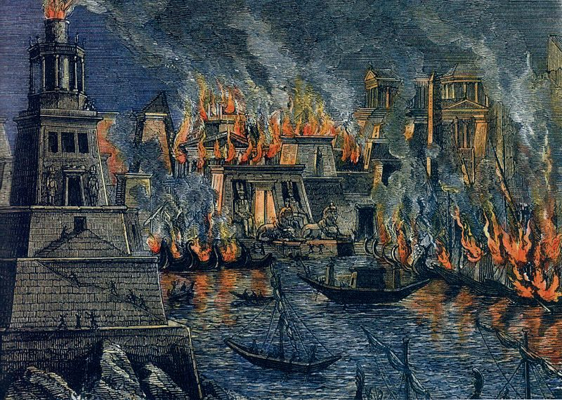

The Symposium is Finally Back!

AFTER FIVE MONTHS OF HIATUS, The Symposium team is finally back to bring you weekly articles once again related to ancient history! We would like to extend our gratitude to the people who continued supporting us and inspired us to push through difficulties.
We're coming back with a bang with the release of the next installment of our magazine! To compensate for our absence for the past few months, we decided to add more articles as a bonus. You can read the magazine online here - no just kidding the legit one is here. Stay safe and happy reading!
- Editors of The Symposium
What's inside the New Release?

THE CONVIVIUM - The Banquet. As we begin this new chapter in the making of The Symposium, we chose the Roman equivalent of the Greek symposium - the convivium - to signify renewal. We join together once again to feast upon ancient history and its wonders.
The cover for this magazine is Emperor Caesar Augustus, the first Roman emperor (and perhaps one of the coolest Roman emperors 😎) who ascended after the political turmoil of the Roman Republic during the first century BC. He famously said, "I found Rome a city of bricks and left it a city of marble," fitting our theme of renewal.
We hope that the articles prepared will enkindle your interest of ancient history and serve a feast of information about the empires and civilizations of old. Have fun reading... also never EVER accept suspicious horses into your city.
Short Articles and Collections Submitted by Fans

How Am I Gonna Rule Over An Empire At The Age of 32?
(By AnonymousSender1872) Nice question, Alexander. That's the neat part, after conquering the land of Egypt, the fertile land of Mespotamia, and the edges of the known world even to Ganges, well, you just, erm... See More
How Baybayin Is Related to the Latin Alphabet
(By AverageScipioFan) It's a well-known and noticeable fact that Tagalog draws on languages such as Spanish, Chinese, Malay, Sanskrit, and many more for its vocabulary. However, one might be more surprised with the origin of its native writing sytem, Baybayin... See More
A Map of the Roman Empire's Expansion... and Fall
(By ThatPyramidBuilder) A map that embodies the zenith of the human emotion known as pain through the shrinking territory of the Roman Empire, the end of classical history... See More
Alexander the Great's Speech at Opis
(By TheConstantinopolitanCitizen) Following a mutiny at Opis, Alexander the Great delivered this speech. The Greek historian Arrian records it this way... See More
The Shield of Achilles (from Book XVIII of the Iliad)
(By GenericLiteraturePerson) Homer's Iliad provides a vivid description of the shield of Achilles forged by the god Hephaestus (Roman: Vulcan). After the death of Patroclus, Achilles resolves to fight in battle to avenge his friend despite being doomed to death if ever he should engage in the Trojan war.... See More